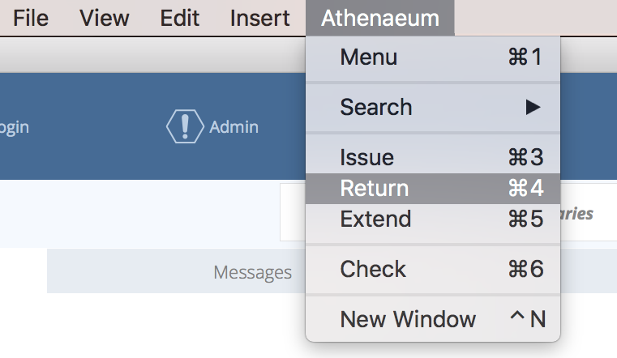
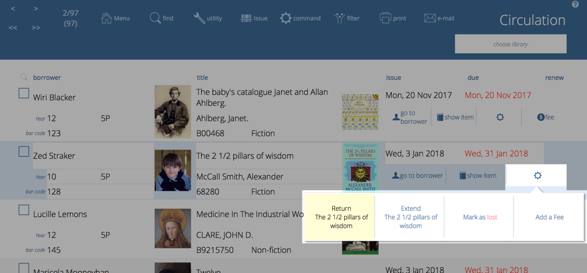
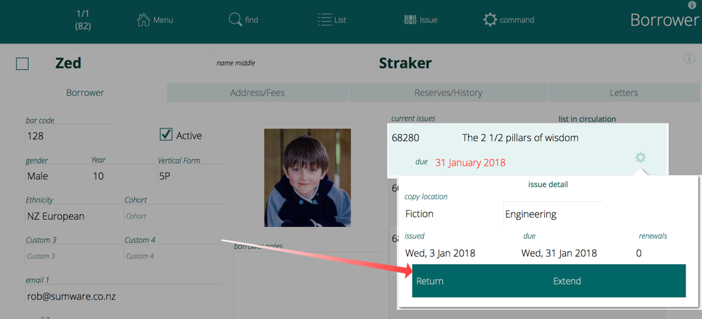
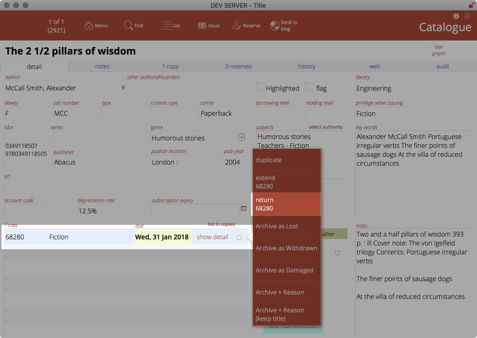
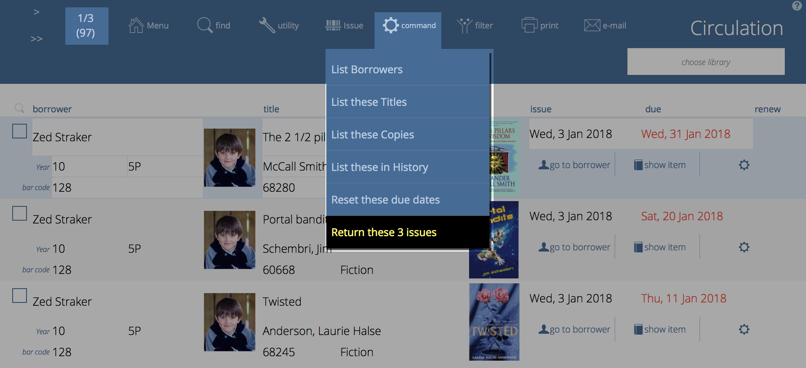
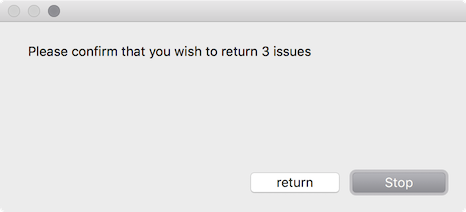

Returning
At any time to go to the Return screen, press Apple / Control - 4. You can also use the single key "4" option if you are not typing into a field.

Scan the bar code of the returned item and Athenaeum will process it.1
Athenaeum will process the return, and take any action it is configured to take for late returns and reserves, if those apply.
The return is added to the last transactions list and if available, the book cover or image for the item returned is displayed on screen.
When you have finished returning items, leave the bar code blank and press the OK button, or just click the Menu button to return to the main menu.
Returning from the issue list
Return any item in the list of issues by clicking the gear widget and selecting "return xxx" from the pop-up menu.

Return from borrower detail
You can see a borrower's currently issued items on the borrower's detail screen.
Click the gear widget next to the issue you wish to return and click the Return button.

Return from catalogue
When viewing the title detail for an issued item, you can click the gear widget next to the copy you wish to return and choose "return xxx" (where xxx is the bar code of the item).

Items not Found on Return
It isn’t a rare occurrence where a long lost book suddenly reappears; the item may well have been archived in the meantime.
If an item is returned which is not in the catalogue, Athenaeum will check the archive to see if it can find the item there. If it does, you will be advised of this.
Returning Multiple items
To bulk return items, simply find those items in the issue list, click the Command button and click the "Return these n issues" button (where "n" is the number of issues in the found set).

The number of items to be returned is displayed in the confirmation message. Take a moment to confirm that before continuing.
  If any of the items to be processed are currently on reserve, you will be asked to whether you wish to skip them, show them in a list or just return them.
-
If your bar code scanner is not configured to press the “enter” or “return” key after a scan and doesn’t move on automatically — press the Enter key on the keyboard or click on OK. ↩